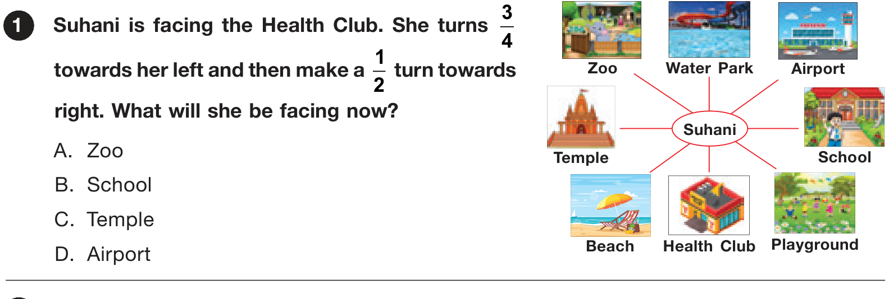
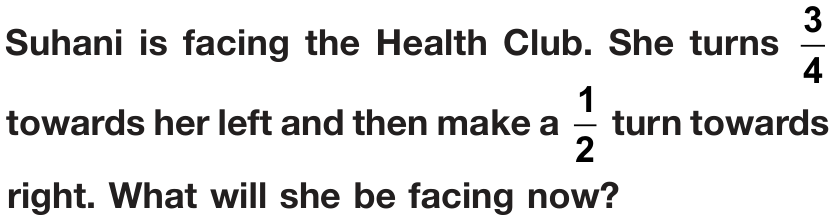
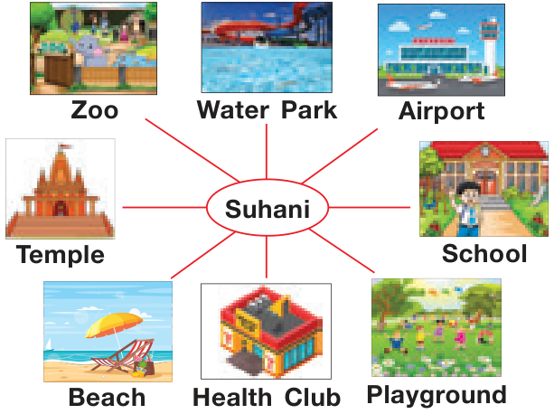
Zoo
School
Temple
Airport
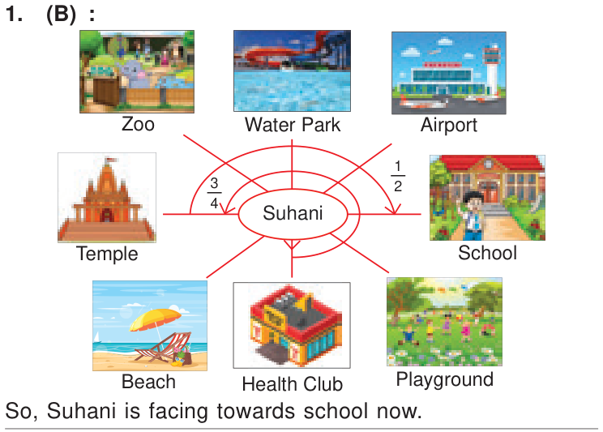
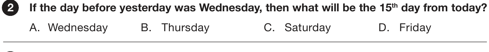
If the day before yesterday was Wednesday, then what will be the 15th day from today?
Wednesday
Thursday
Saturday
Friday
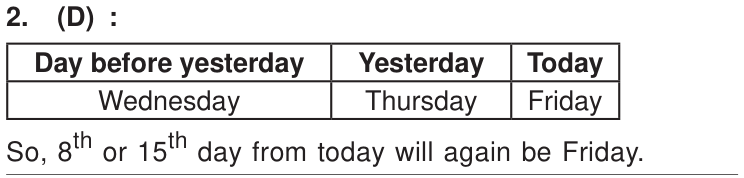
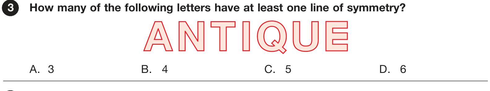
How many of the following letters have at least one line of symmetry?
3
4
5
6
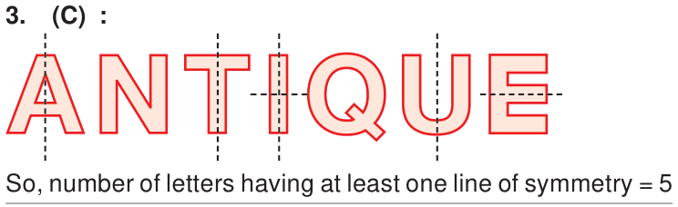
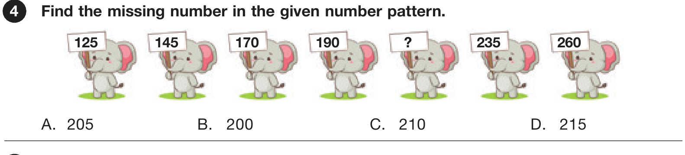
Find the missing number in the given number pattern.
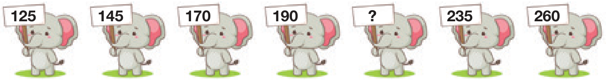
205
200
210
215
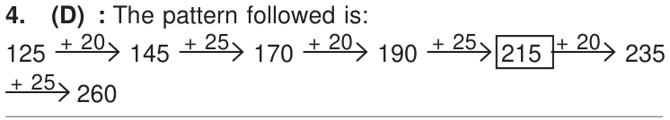
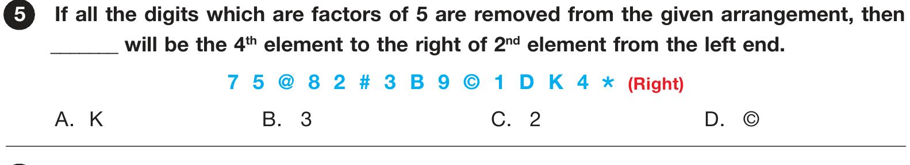
If all the digits which are factors of 5 are removed from the given arrangement, then _______ will be the 4th element to the right of 2nd element from the left end.
K
3
2
©
After removing factors of 5, the new arrangement becomes
7 @ 8 2 # 3 B 9 © D K 4 *
(Right)
So, 2nd element from the left end is @ and 4th element to the right of @ is 3.
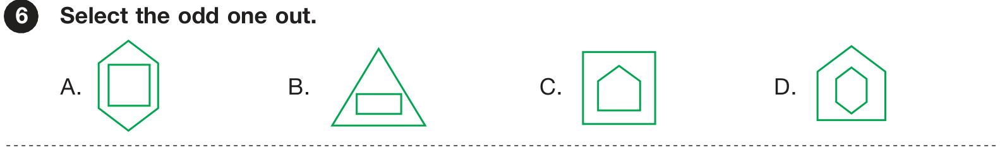
Select the odd one out.
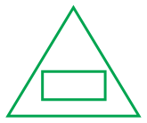
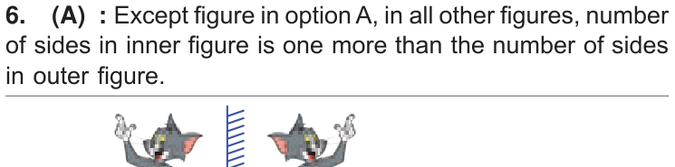
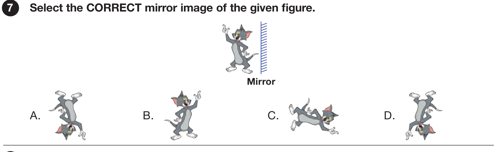
Select the CORRECT mirror image of the given figure.
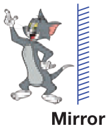
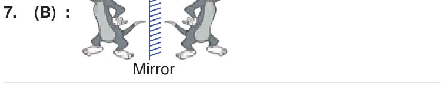
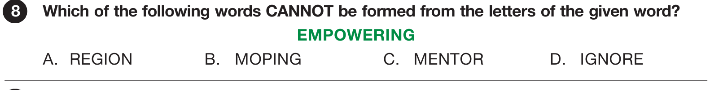
Which of the following words CANNOT be formed from the letters of the given word?
EMPOWERING
REGION
MOPING
MENTOR
IGNORE
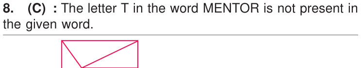
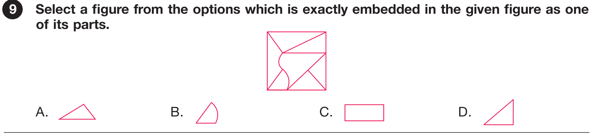
Select a figure from the options which is exactly embedded in the given figure as one of its parts.
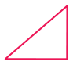
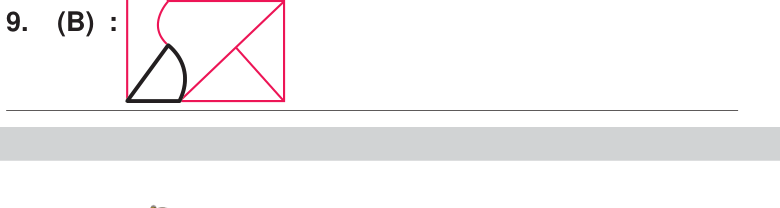
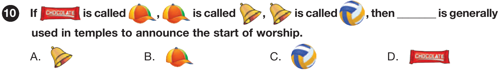
If
used in temples to announce the start of worship.
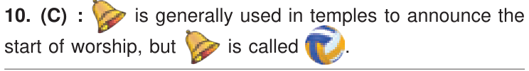
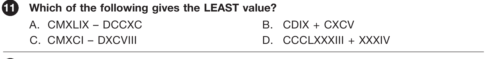
Which of the following gives the LEAST value?
CMXLIX – DCCXC
CDIX + CXCV
CMXCI – DXCVIII
CCCLXXXIII + XXXIV
A. CMXLIX – DCCXC
= (900 + 40 + 9) – (500 + 100 + 100 + 90) = 949 – 790 = 159
B. CDIX + CXCV
= (400 + 9) + (100 + 90 + 5)
= 409 + 195 = 604
C. CMXCI – DXCVIII
= (900 + 90 + 1) – (500 + 90 + 8)
= 991 – 598 = 393
D. CCCLXXXIII + XXXIV
= (300 + 50 + 30 + 3) + (30 + 4)
= 383 + 34 = 417
As, 159 < 393 < 417 < 604
So, option A gives the least value.
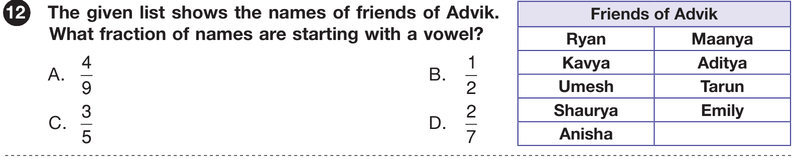
The given list shows the names of friends of Advik. What fraction of names are starting with a vowel?
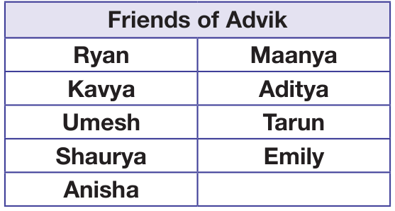
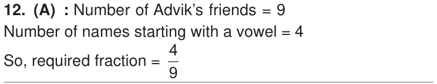
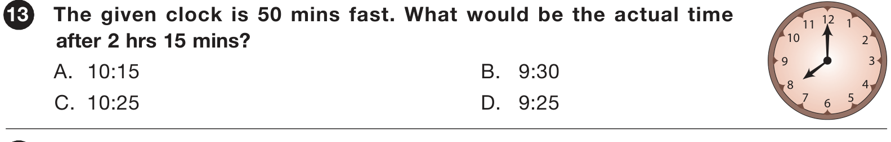
The given clock is 50 mins fast. What would be the actual time after 2 hrs 15 mins?
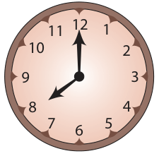
10:15
9:30
10:25
9:25
Time shown on the given clock = 8:00.
So, actual time = 50 mins before 8:00 i.e., 7:10
Now, actual time after 2 hrs 15 mins = 2 hrs 15 mins after 7:10 i.e., 9:25
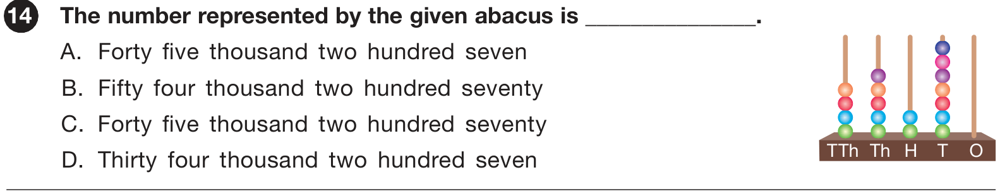
The number represented by the given abacus is _______________.
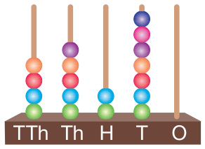
Forty five thousand two hundred seven
Fifty four thousand two hundred seventy
Forty five thousand two hundred seventy
Thirty four thousand two hundred seven
Number shown on the abacus = 45270
which is written as forty five thousand two hundred seventy.
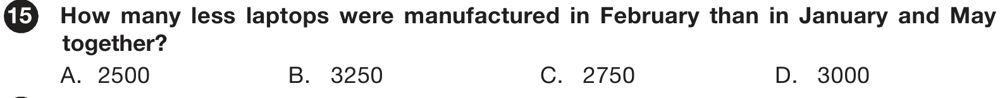
DIRECTIONS (15-16) : The given bar graph shows the number of laptops manufactured by a company over the given five months. Study the graph carefully and answer the following questions.
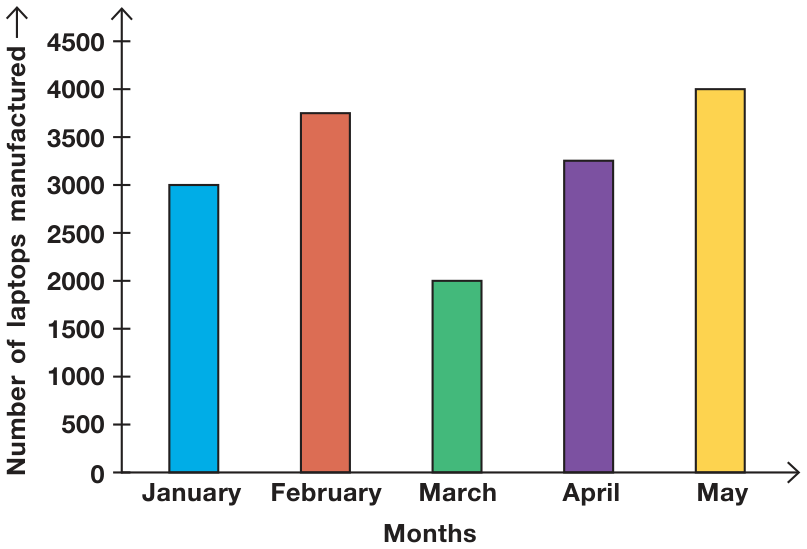
How many less laptops were manufactured in February than in January and May together?
2500
3250
2750
3000
Number of laptops manufactured in February = 3750 Number of laptops manufactured in January and May together = 3000 + 4000 = 7000
So, difference = 7000 – 3750 = 3250
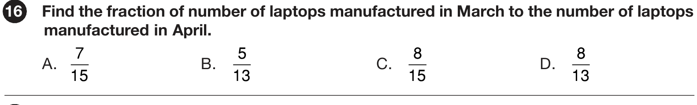
DIRECTIONS (15-16) : The given bar graph shows the number of laptops manufactured by a company over the given five months. Study the graph carefully and answer the following questions.
Find the fraction of number of laptops manufactured in March to the number of laptops manufactured in April.
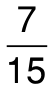
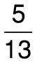
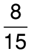
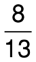
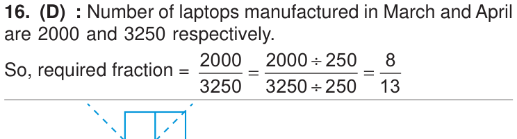
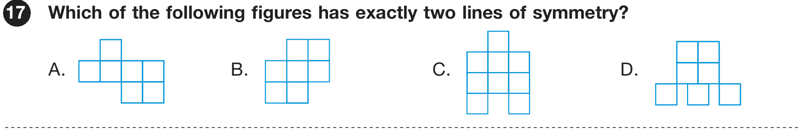
Which of the following figures has exactly two lines of symmetry?
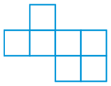
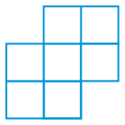
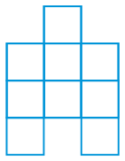
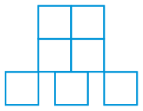
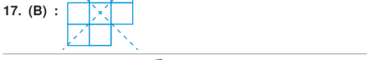
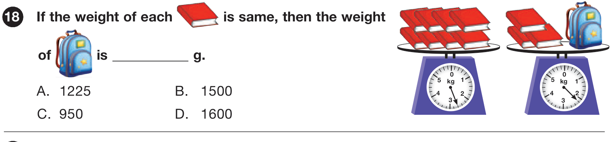
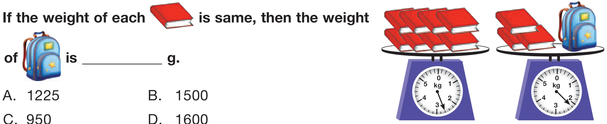
1225
1500
950
1600
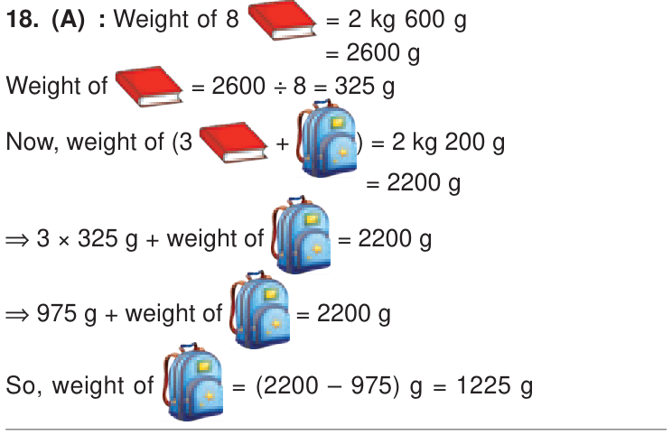
Option A
Option B
Option C
Option D
Required perimeter = 28 × side
= (28 × 4) cm = 112 cm
25
30
20
35
Divya bought six bottles of orange juice each of 1500 mL capacity for a picnic. If 6 L 750 mL of juice was consumed, then how much juice is left with her?
3 L 300 mL
3 L 250 mL
2 L 250 mL
2 L 150 mL
Quantity of juice bought
= 1500 mL × 6 = 9000 mL
Quantity of juice consumed = 6 L 750 mL
So, quantity of juice left = 9 L – 6 L 750 mL = (9000 – 6750) mL = 2250 mL = 2 L 250 mL
For a venue decoration, an event manager needs 4580 red flowers, 7150 white flowers and 2375 orange flowers. How many total flowers does he need in all?
14105
12120
13790
14510
Total number of flowers needed = 4580 + 7150 + 2375 = 14105
2
3
4
5
Place value of 6 in 48361 is 60.
Place value of 6 in 969 is 60.
Place value of 6 in 4605 is 600.
Place value of 6 in 13867 is 60.
Place value of 6 in 23468 is 60.
So, there are 4 such numbers that have 60 as the place value of 6.
Ashima wants to fence her rectangular garden with wire. If the length of garden is 75 m and breadth is 20 m less than the length, then how much total wire does she need in all?
95 m
175 m
260 m
150 m
Length of garden = 75 m
Breadth of garden = (75 – 20) m = 55 m Length of wire needed to fence the garden = Perimeter of the garden
= 2 × (75 + 55) m = 2 × 130 m = 260 m
31
18
21
9
Vivek went every morning for his running practice. He ran 5 km 150 m on Monday, 3 km 250 m more on Tuesday than on Monday. How much total distance did he run on both the days?
8 km 400 m
10 km 950 m
7 km 850 m
13 km 550 m
Rashi bought 56 cookies from the market. Out of which 14 are chocolate cookies, 28 are butter cookies and rest are sugar cookies. What fraction of total cookies bought were sugar cookies?
XYZ publication published a new book having 648 pages. How many total pages are there in 37 such books?
25712
23976
21720
24796
Number of pages in 1 book = 648
So, number of pages in 37 such books = 648 × 37 = 23976
A librarian ordered 40 Maths books and 35 Science books for the library. If the cost of each Maths book is ₹ 125 and that of each Science book is ₹ 92, then how much did she has to pay for the books?
₹ 8220
₹ 7580
₹ 8190
₹ 9370
Total cost of Maths books = 40 × (₹ 125)
= ₹ 5000
Total cost of Science books = 35 × (₹ 92)
= ₹ 3220
So, total amount of money she has to pay = ₹ (5000 + 3220)
= ₹ 8220
Mayank drew a figure as shown here. How many lines of symmetry does the given figure has?
0
1
2
3
Read the given statements carefully and state T for true and F for false.
(i) 2 is the smallest odd prime number.
(ii) The number of factors of largest 3-digit prime number is 5.
(iii) The HCF of 36 and 144 is 36.
(i) (ii) (iii)
T T F
T F F
F F T
F T F
(i) False; 2 is the only even prime number and it is also the smallest prime number.
(ii) False; A prime number has only two factors, 1 and the number itself.
(iii) True;
Factors of 36: 1, 2, 3, 4, 6, 9, 12, 18, 36
Factors of 144; 1, 2, 3, 4, 6, 8, 9, 12, 16, 18, 24, 36, 48, 72, 144 So, HCF (36, 144) is 36.
The given figure shows the amount of water in 4 beakers at first.
Mohit poured the water of beaker S equally to beakers P and Q and then poured 150 mL of water from beaker R to beaker S. Which of the following options shows the CORRECT descending order of beakers as per water contained in them now?
P, R, S, Q
Q, R, S, P
R, P, Q, S
S, Q, P, R
Quantity of water in each beaker initially :
P = 500 mL, Q = 200 mL, R = 950 mL and S = 400 mL After pouring the water of beaker S equally to beakers P and Q and then 150 mL of water from beaker R to beaker S, we have P = (500 + 200) mL = 700 mL
Q = (200 + 200) mL = 400 mL
R = (950 – 150) mL = 800 mL
S = (400 – 400 + 150) mL = 150 mL
Quantity of water in descending order :
800 mL > 700 mL > 400 mL > 150 mL
So, the correct descending order is R, P, Q, S.
Option A
Option B
Option C
Option D
How many minimum number of squares must be shaded so that the given figure has exactly one line of symmetry?
4
5
6
None of these
60
56
60
56